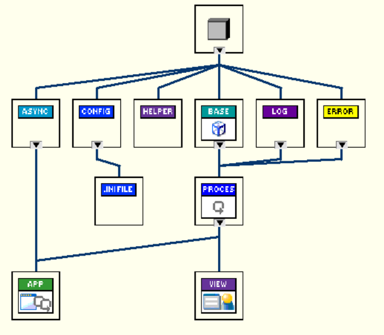

Framework Architecture
This page describes the core classes and interfaces of the Triarc Framework (TF) and how they depend on each other.
The hierarchy is shown below.

Framework Classes
The framework classes are the starting point for every Triarc module. They manage the lifecycle of the processes in an application and let you compose processes into larger modules.
Base Name and configuration file scaffolding
└── Process Message loop and lifecycle (implements Error Handler Interface and Logging)
├── View Adds a front panel, View.vi
└── Application Owns other processes (implements Async Handler)
| Class | Responsibility | Read more |
|---|---|---|
Base |
Holds the name of the object and the configuration file path and reference. Can be used on its own for components that do not run asynchronously. | Base |
Process |
Runs a message loop, manages the lifecycle, and provides messaging, requests, broadcasts, error handling and logging. | Process |
View |
A Process with a user interface in View.vi. |
View |
Application |
A Process that owns other processes and applies lifecycle, error handlers and log handlers to them. |
Application |
Note that Application inherits from Process, not from View.
An application has no panel of its own. Add views to it to give it a user interface.
Framework Interfaces
The framework interfaces decorate a class with additional behavior.
For example, a class that implements the Configuration File interface can read and write its own section of a configuration file through the API of the interface.
| Interface | What it adds | Read more |
|---|---|---|
Helper Loop |
Helper Action.vi, run periodically in parallel to the process. |
Helper Loops |
Async Handler |
Async Action.vi, run once in parallel to the process for slow or blocking work. |
Async Handler |
Configuration |
Storage-agnostic API for reading and writing configuration values. | Configuration |
Configuration File |
Implementation of Configuration that stores values in an ini file. |
Configuration |
Error Handler Interface |
Handle Errors.vi. Implement it to create an error handler. Every Process implements it and delegates to its configured error handler. |
Error Handling |
Logging |
Log Debug.vi … Log Critical.vi, and the Log.vi method that a log handler overrides. Every Process implements it and delegates to its configured log handlers. |
Logging |
Callback |
Callback.vi, called when the response to an asynchronous request arrives. |
Requests |
A class lists only its direct parent and the interfaces it declares itself.
To find everything a class can do, follow its ancestors: a View is also a Process, an Error Handler Interface, a Logging and a Base.
Libraries
All framework classes are members of TF.lvlib.
The library also contains Broadcast Event Helpers.lvlib, with VIs for dequeuing broadcast events outside an event structure.
These VIs are deprecated in TF.lvlib and will be removed from it in a future release.
A one-to-one replacement is installed in the support directory of the framework.